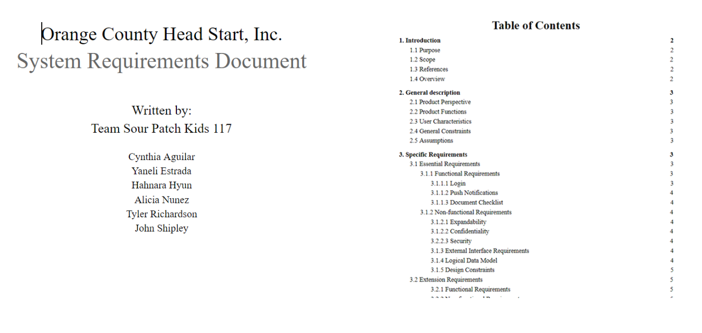
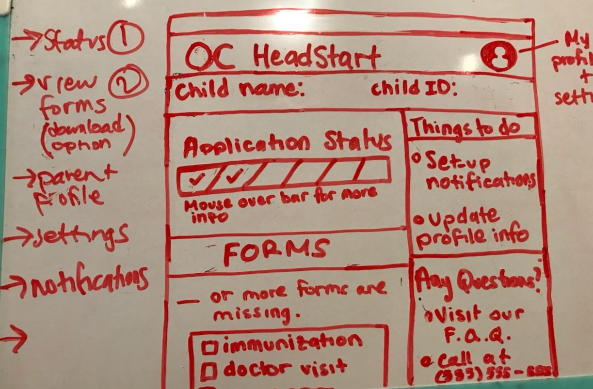
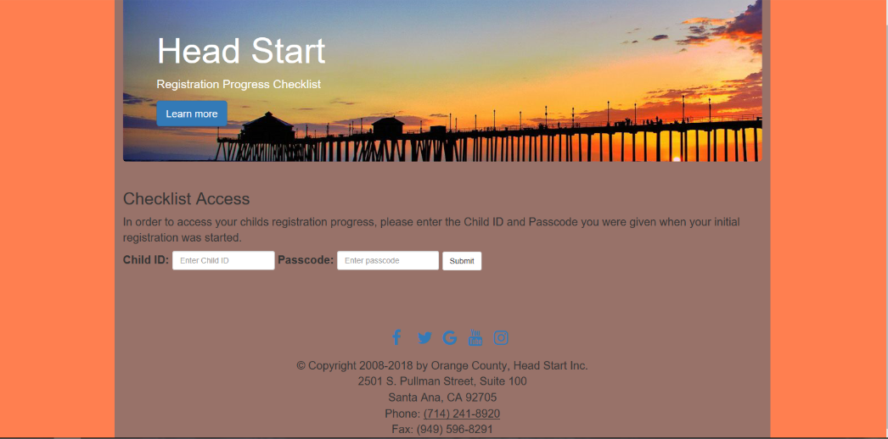
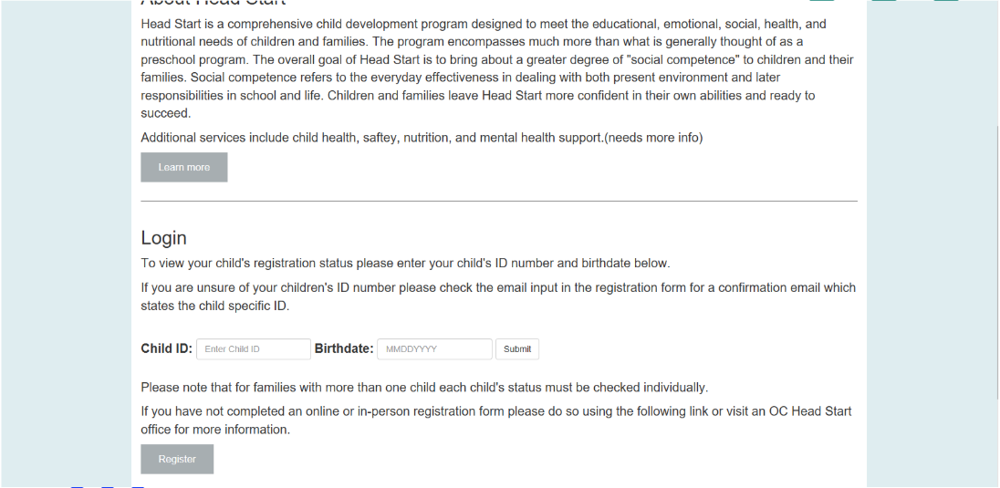
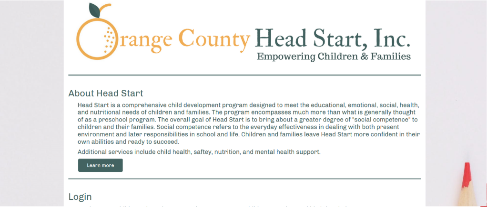

Overview
As a part of a classroom assignment, my teammates and I worked closely with our sponsor, Orange County Head Start, to create a website as a possible solution to automate their processes. Orange County Head Start is a non-profit program dedicated to giving back to the community by providing low-income, at-risk children with the proper resources to help them attend school.
The problem
The application process for the program acts like a black-box; parents could not see their application status or know which document forms they needed to submit. As a result, the centers would be flooded with calls and staff members often had to work long hours to update applications manually. In addition, our sponsor informed us that some of the families were having difficulty finding OC Head Start offices to submit their paperwork to.
Our Solution
To create a website which informs parents of their current application status. This would allow parents to know which forms they have submitted, as well as any other form they may be missing. In addition, we wanted to display a map in the website, in which parents could look up which center is closest to their current location.
The Process
Requirements Elicitation
As a team, we regularly met with our sponsor to gather requirements necessary for the construction of our website. Because we were tasked to simulate an Agile environment, this made it easy to have room for flexibility in the requirements. I was in charge of creating and overseeing the development of the System Requirements Document. I decided to use the IEEE 830-1998 template since it met our needs and fit well with the context of the project.
Prototyping
Based on the requirements gathered in the elicitation sessions with our sponsor, we created both low and high fidelity prototypes to refine our ideas on how we wanted the website to look. We redesigned if the requirements changed or if we felt we needed to go a different direction.
The above figure displays one of the low-fidelity prototypes I envisioned for our final product. I used my knowledge of visual hierarchies to arrange the most important information first, such as the Application Status and Forms section. Because one of the main problems was that parents were not able to see their application status, I figured it would best be represented by a progress bar. I took inspiration from the Dominoes Pizza progress bar. For the forms section, I wanted it to be like a checklist in which parents would be able to see which documents they are missing.
The following high-fidelity prototypes were designed throughout our development process. The styles changed as we gathered more information from our sponsor, and so that it reflected the mission of the website. I was in charge of adding functionality to the pages by using PHP and SQL. Furthermore, I was also in charge of developing the document display where parents can see what documents they are missing. This information was extracted using SQL queries from the database our team developed.
Iteration #1
Iteration #2
Iteration #3
Final Product
Although we faced some limitations due to government regulations on non-profit organizations, we were able to create something that followed their rules and that could potentially resolve the influx of calls. The website will be actively used once the staff have been trained.
View Website